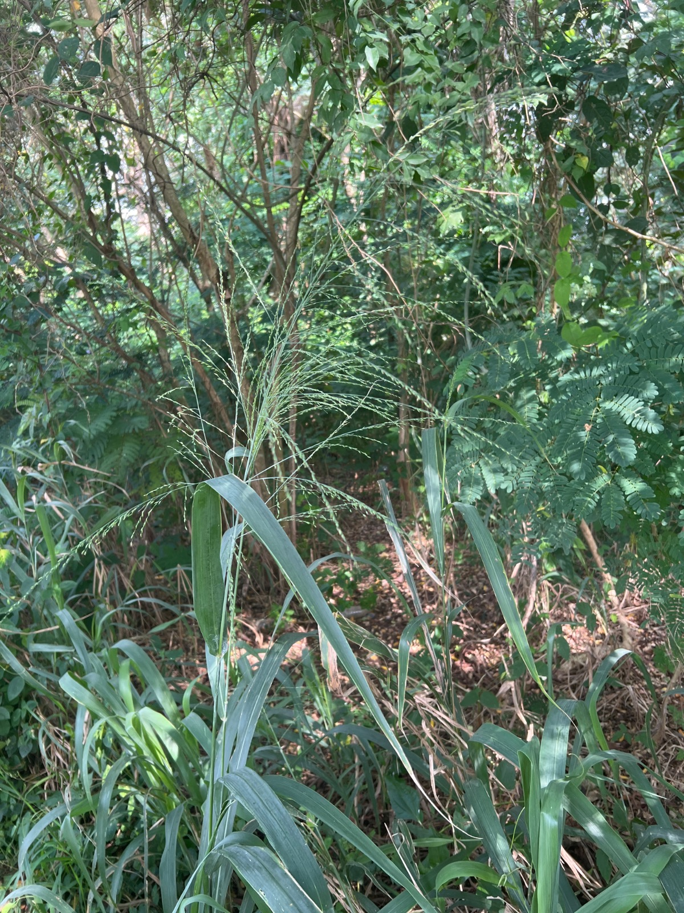
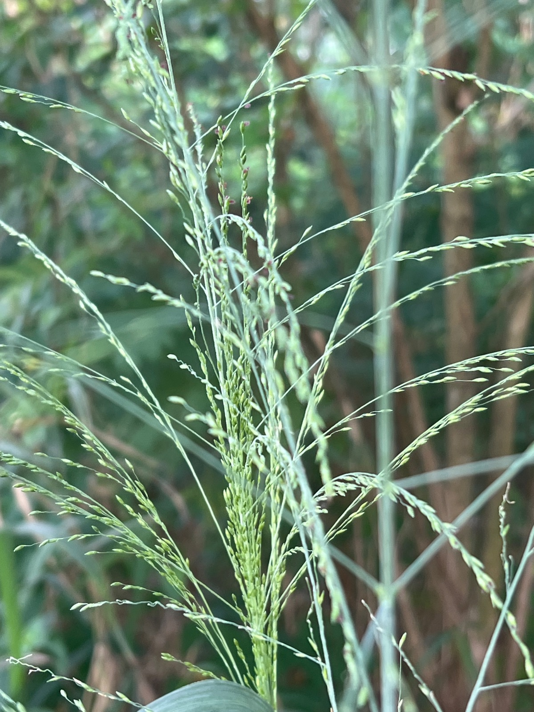
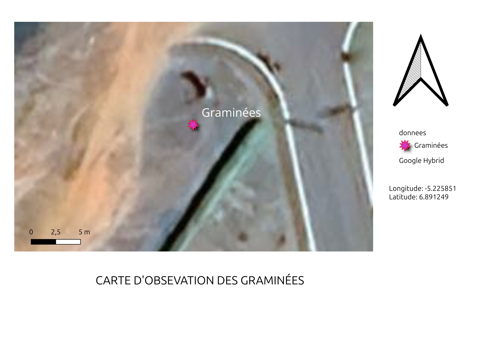

Le problème résolu : protéger et disperser la graine
Les plantes à fleurs (angiospermes) enferment la graine dans un fruit et pratiquent la double fécondation. Les graminées ont des fleurs discrètes, pollinisées par le vent. Âge des plantes à fleurs : environ 130 millions d'années, Crétacé (ordre de grandeur).

Graminées : fleurs et fruits portés par le vent
Reproduction
Le pollen voyage par le vent. La graine (le grain) est enfermée dans un fruit. Le gamétophyte est microscopique.


Observé sur le terrain
E10-05 | Graminées | inconnue | Trouvé | -5.225851 | 6.891249 | 3 | 2026-11-21 11:21:15 |sec |